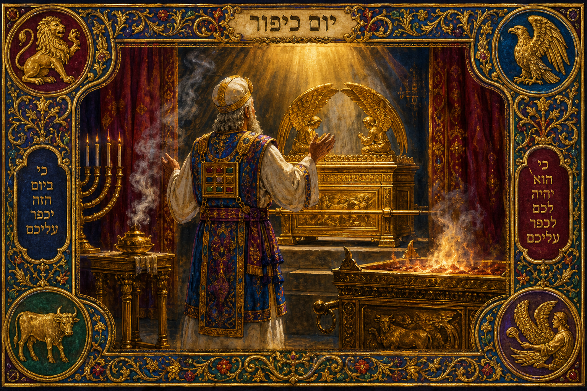

Old Testament · Book 3 of 39
Leviticus
A holy God moves into the middle of an ordinary camp, and shows his people how to live close to him without being consumed.
Exodus ends with the tabernacle built and God's glory filling it. Leviticus answers the question that raises immediately: now that he lives among us, how do we live with him?
Ye shall be holy: for I the LORD your God am holy.
What happens in Leviticus
Leviticus is not a story in the way Genesis or Exodus are stories; it is closer to a manual handed to a newly freed people who are about to live next door to the living God. It opens with detailed instructions for five kinds of offerings — burnt, grain, peace, sin, and guilt — each one a different way of dealing with sin, gratitude, or restored relationship. Aaron and his sons are set apart as priests in a solemn ordination, and then tragedy strikes almost immediately when two of Aaron's own sons offer "strange fire" before the LORD and are struck down, a sobering reminder that nearness to a holy God is not something to treat carelessly. The book moves through laws about clean and unclean food, childbirth, skin disease, and bodily discharges — not arbitrary rules, but a repeated lesson that everything in daily life, even the most ordinary things, matters to God. At its center stands the Day of Atonement, the one day each year when the High Priest enters the innermost room of the tabernacle to make atonement for the whole nation. The book closes with laws on justice, the sabbath years, the Year of Jubilee when debts are forgiven and land returns to its original family, and vows made to the LORD.
Why it matters
It is easy to read Leviticus as a list of rules and miss what it is actually about: a God who wants to live close to his people, and who takes the cost of that closeness seriously. Every sacrifice points to the same truth — sin separates, but God himself provides the way back. The blood on the altar is never about God being distant or hard to please; it is about how seriously he takes the relationship, because real relationship with someone utterly holy requires that sin be dealt with honestly, not ignored. The New Testament writers return to Leviticus again and again when they explain what Jesus did, because the pattern was laid down here first: a spotless offering, a merciful priest, and a God who draws near. Leviticus is, in its own way, the Old Testament's clearest picture of grace wearing work clothes.
Jump to a chapter
Leviticus has 27 chapters — select one to begin reading there.